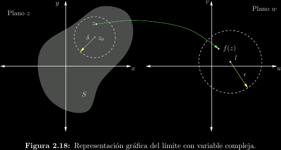
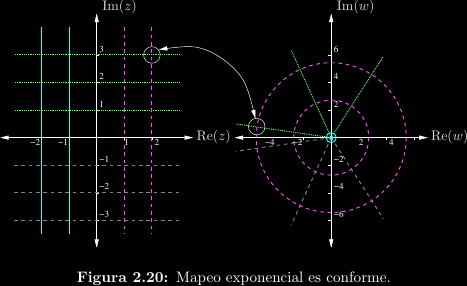

Derivación compleja
En las funciones de variable real se habla de límites laterales por la izquierda y por la derecha. Se dice que un límite está definido solo si estos dos límites laterales existen y además concuerdan. Como las derivadas no son más que límites con una forma particular, una derivada existe solo si existen las derivadas por la izquierda y por la derecha y ambas concuerdan.
El concepto de límite se puede extender a los complejos, pero con una complicación adicional: existen infinitas direcciones por las cuales tomar el límite, en vez de solo dos, y todas ellas deben existir y concordar para que la derivada compleja exista. Esta misma situación ocurre para continuidad en una función de variable compleja, ya que una función \(f(z)\) es continua en \(z = z_0\) si y solo si: \[f(z_0) = \lim_{z\to z_0}{f(z)}\]
Intuitivamente, podemos entonces decir que continuidad y derivabilidad son propiedades mucho más fuertes en los complejos que en los reales, en el sentido de que son más difíciles de alcanzar. El poder decir que una función de variable compleja es derivable abre la puerta a muchas simplicacioones y garantías acerca de la función.

Estas implicaciones son tan amplias que existen varios términos para llamar a una función derivable en una región. Aunque no exactamente idénticos, de momento los trataremos como si lo fueran.
- Diferenciable: La función es continua y su derivada existe congruentemente desde infinitas direcciones.
- Holomorfa: La función es infinitamente diferenciable. Nótese que esto implica que si una función puede derivarse una vez, necesariamente puede seguirse derivando cuantas veces se quiera.
- Analítica: La función puede expandirse en una serie de potencias convergente (por ejemplo, de Taylor).
Esa tripleta de propiedades prácticamente equivalentes es uno de los resultados más centrales e importantes del análisis complejo. Es el fundamento de todo lo que sigue en esta unidad.
¿Y cómo se deriva una función de variable compleja?
Para nuestros intereses, se deriva exactamente igual que si la función fuese de variable real. Aplican las mismas reglas y teoremas. Por ejemplo, \(\left(\mathrm{Ln}(z)\right)' = \frac{1}{z}\). Equivalentemente, se puede obtener una derivada compleja por definición a través de las ecuaciones de Cauchy-Riemann.
Ecuaciones de Cauchy-Riemann
Determinar la equivalencia de infinitas derivadas direccionales no es sencillo. Por suerte, Cauchy y Riemann demostraron que es suficiente con encontrar que la función es derivable desde dos direcciones ortogonales, como son los ejes real e imaginario. Sea \(f(z) = f(x + jy) = u(x, y) + jv(x, y)\). \(f(z)\) es diferenciable/holomorfa/analítica en aquellos puntos donde se cumple que: \[\exists f'(z) \iff \frac{\partial u}{\partial x} = \frac{\partial v}{\partial y} \land \frac{\partial u}{\partial y} = -\frac{\partial v}{\partial x}\] O, equivalentemente, \[f'(z) = \frac{\partial u}{\partial x} + j\frac{\partial v}{\partial x} = \frac{\partial v}{\partial y} - j\frac{\partial u}{\partial y}\]
Si las ecuaciones de Cauchy-Riemann se cumplen, se dice que \(u(x, y)\) y \(v(x, y)\) son funciones conjugadas. Puede demostrarse que dos funciones conjugadas deben ser también funciones armónicas, es decir, que satisfacen la ecuación de Laplace \(\nabla^2 f = 0\): \[\frac{\partial^2 u}{\partial x^2} + \frac{\partial^2 u}{\partial y^2} = \frac{\partial^2 v}{\partial x^2} + \frac{\partial^2 v}{\partial y^2} = 0\] Esta relación permite encontrar una de las funciones conjugadas dada la otra, con lo cual es posible construir una función analítica completa.
Conformidad
Se dice que un mapeo \(w = f(z)\) es conforme si los ángulos entre curvas arbitrarias se preservan al aplicar el mapeo. Esto ocurre en aquellos puntos donde \(f(z)\) es analítica y además \(f'(z) \ne 0\)
